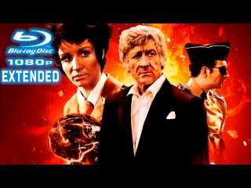
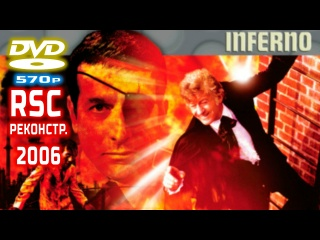
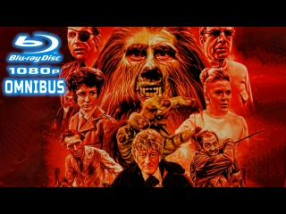
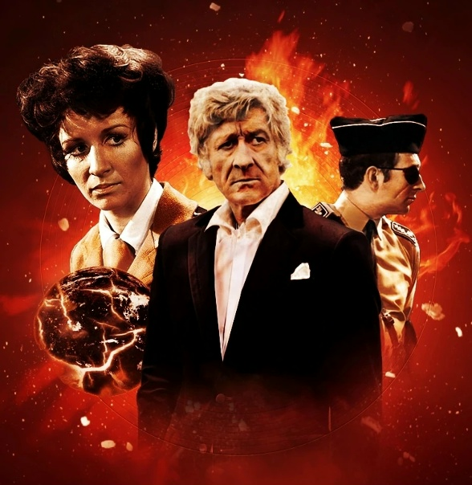

помощник

помощник
Субтитры: Русские и Английские | |
+ Расширенная версия (эпизод 5) Субтитры: Русские и Английские |  |
RSC реконструкция цвета, 2006 Субтитры: Русские и Английские |  |
Субтитры: только Английские |  |
с обновлением визуальных эффектов (cunningmunki) Субтитры: отсутствуют |
| Все эпизоды найдены в 1985 г. в 525-строчном формате NTSC * Преобразованы RSC (NTSC-в-PAL) |
|---|
| помощник | помощник |
Проект «Инферно» бурит скважину к ядру Земли, и Доктор требует остановить бурение, но Сталман не слышит никого. В ходе эксперимента Доктор случайно активирует консоль ТАРДИС и проваливается в параллельную вселенную — где проект уже дошёл до критической точки и планета гибнет: зелёная слизь превращает людей в примордов, жутких обезумевших существ. Это первая в сериале история с параллельной вселенной, и она работает как зеркало: Доктор видит, чем закончится проект в его мире, если Сталмана не остановить. Главная фишка — двойники всех знакомых: Бригадир здесь не друг, а угроза, Лиз — партийная функционерка, а Бентон — повстанец. Серия закрывает эпоху Лиз Шоу: после «Инферно» она уходит из ЮНИТ, и Доктор остаётся без спутницы.
 VHS(7эп.) - 2 марта 1992 VHS(все) - март 1994 |  DVD - 19 июня 2006 |
|---|---|
DVD-SE - 27 мая 2013 |  Blu-ray - 3 марта 2025 * Версия в нашей группе |
